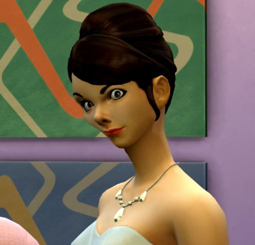
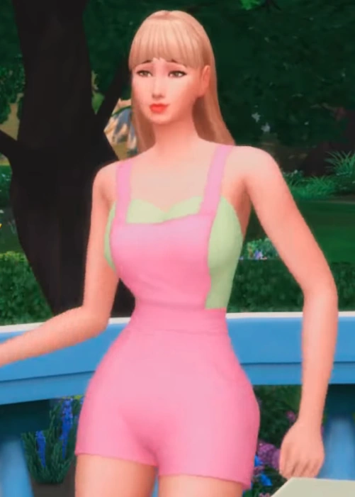
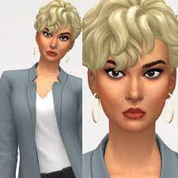
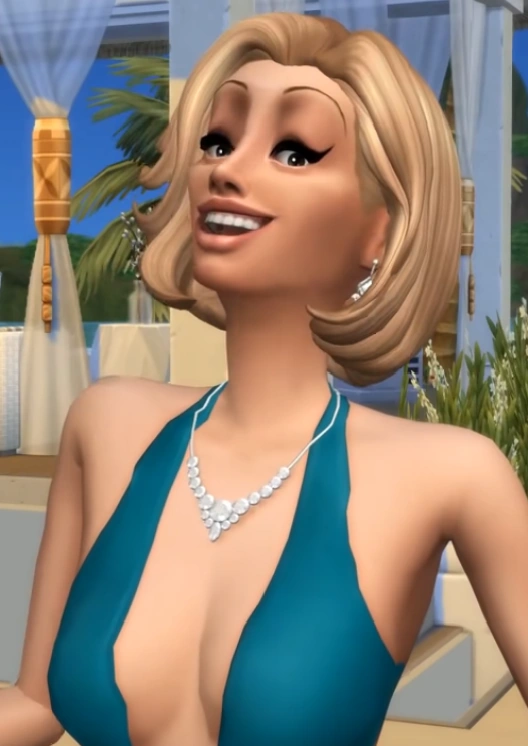
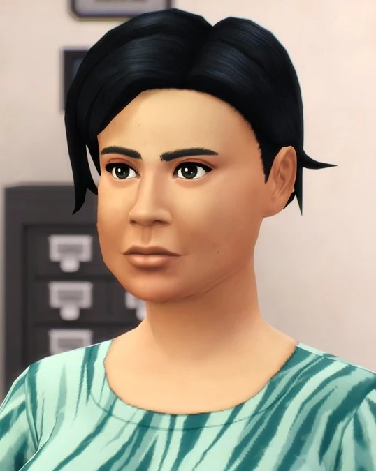

Site sobre girls in the house
Neste site voce vai encontrar algumas informaçoes sobre girls in the house
tais como personagens da serie, localizaçao ficticia, sobre as pensoes e muito mais
Personagens historicos

Matilde
Matilde foi a primeira dona de uma pensao conhecida na serie girls in the house, a mesma pensao onde trabalhavam Duny, Ingrid e Black Eliana. Tambem foi uma das personagem que despertaram a curiosidade dos outros personagem na existencia "olho que tudo ve" após ser sequestrada pelos "homens de preto" mas assim que salva ela fugiu do lugar rapidamente

Duny
Duny é uma das 3 protagonistas da serie tendo quase 100% da sua historia mostrada na serie, dividindo seu protagonismo com alex e honey. Nao so tendo uma vida importante mas tambem uma familia com personagens importantes como cassandra sua tia rica que ajudava ela ate desaparecer completamente sem deixar pistas do porque

Prefeita Xana
Xana temer foi a primeira prefeita apresentada na serie, sendo prefeita de SunTown dividindo a prefeitura com suas assictentes e recepcionista nao tao queridas Priscilao e Honey que depois de descbriem segredos obscuros foram o motivo da prefeitura pegar fogo

Cassandra
Cassandra se casou com um homem rico e poderoso, entretanto, após descobrir os planos malignos do mesmo, Cassandra paga ao hospital e aos médicos para envenenarem seu marido e manter-o internado em seu leito no hospital. Porém, seu marido acaba descobrindo a estratégia de Cassandra e suborna o hospital para libertá-lo, e quando isso acontece, Cassandra reúne toda sua gangue para impedir seu marido.

O'Connor
Miriam O'connor é uma das coadjuvantes mais significantes e nescessarias da serie por mais que seja muito desprezada pelos outros personagenspor seu alto teor de fofoqueira ela vé tudo que acontece e é facilmente manipulavel por isso foi personagem chave em situaçoes graves comom o sequestro de Alex mas mesmo eu nao boto minha mao no fogo
Resumo 4 temporada
"Girls in the House" é uma série de animação brasileira criada por Raony Phillips. A quarta temporada da série continua a acompanhar a vida das personagens principais, Duny, Honey, Alex, Barbie e Srta. Sandra, em um condomínio onde elas vivem e enfrentam situações cômicas e inusitadas.
Nesta temporada, as personagens enfrentam novos desafios e dilemas pessoais. Duny, a protagonista, lida com questões relacionadas à sua carreira como influenciadora digital, enquanto Honey busca encontrar um novo propósito em sua vida. Alex, por sua vez, enfrenta problemas em seu relacionamento amoroso, e Barbie continua a ser a personagem engraçada e desastrada do grupo.
A quarta temporada de "Girls in the House" mantém o tom humorístico e satírico da série, abordando temas contemporâneos e fazendo críticas sociais de forma divertida. Os episódios são marcados por diálogos rápidos, situações absurdas e referências à cultura pop.
No decorrer da temporada, as personagens se envolvem em situações hilárias e se apoiam mutuamente em suas jornadas pessoais. A série também apresenta novos personagens e participações especiais, adicionando ainda mais diversão e surpresas à trama.
Em resumo, a quarta temporada de "Girls in the House" continua a explorar as aventuras e desventuras das personagens principais, proporcionando momentos de riso e entretenimento para os fãs da série. Com seu humor peculiar e personagens cativantes, a temporada mantém o estilo único que conquistou o público ao longo das temporadas anteriores.
footer